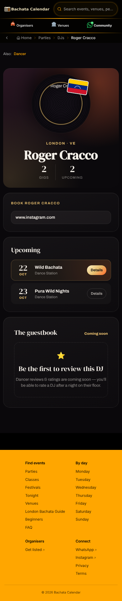

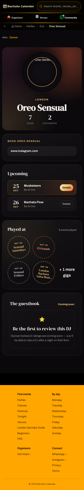
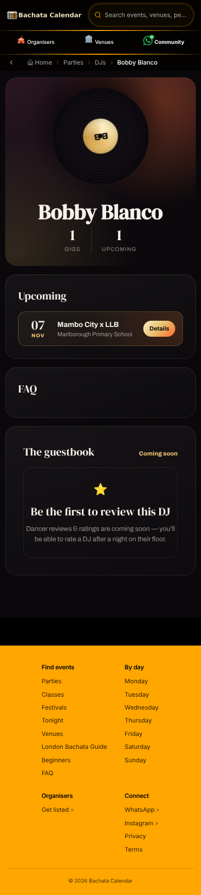
Real people, real data, drawn by the real pieces of the site (production build, phone width). Swipe each row sideways. The line "Leads: Sample Bachata Nights" is a sample, not real data yet.
One card for the person. Small stamps on the card show their roles; tap a stamp and that role opens underneath. The role with something happening (a DJ with upcoming gigs) is open first.
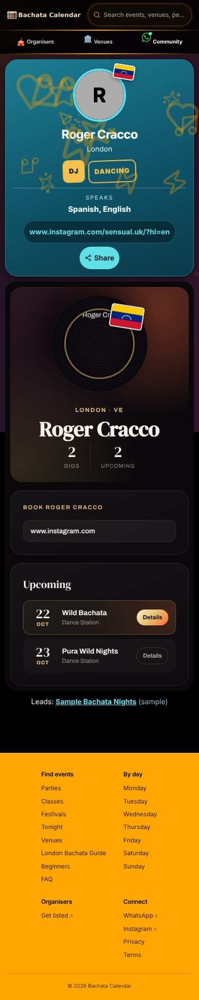
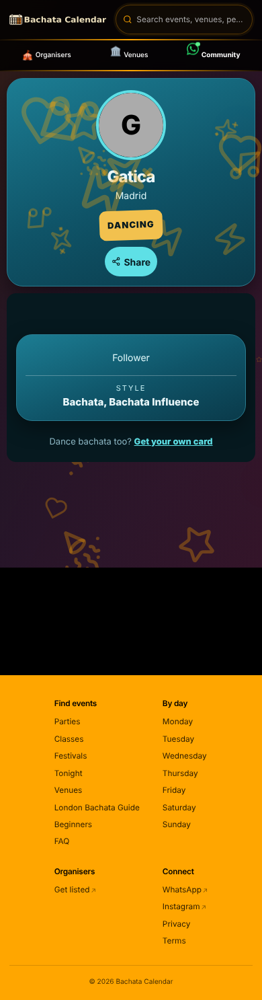
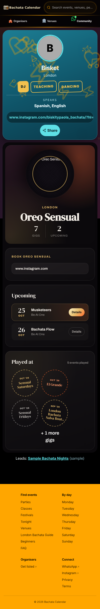
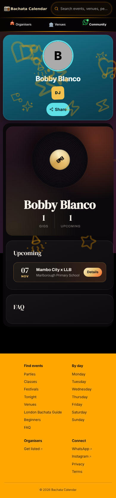
One card, then every role one after another with a heading, the busiest role first. Nothing to tap, just scroll.
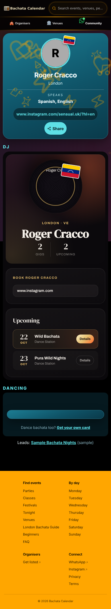
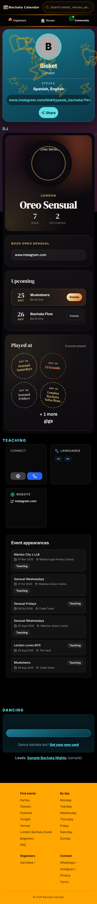
One card, then a tab bar. Only the chosen role is shown. The busiest role is the first tab.
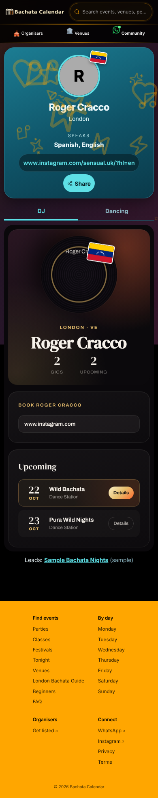
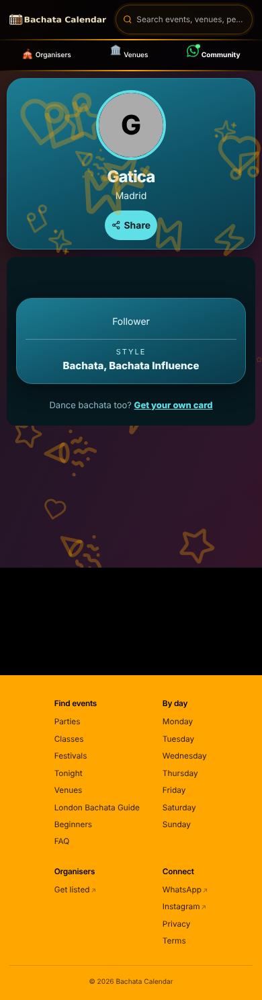
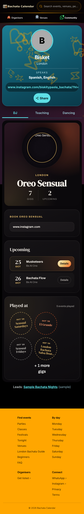
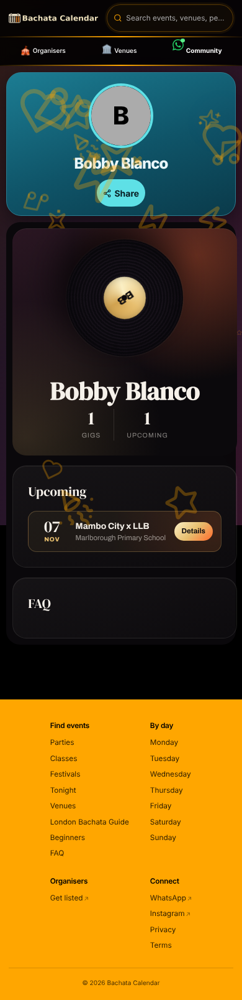
The pages as they are now: the dancer page, then the DJ page, for the same people.
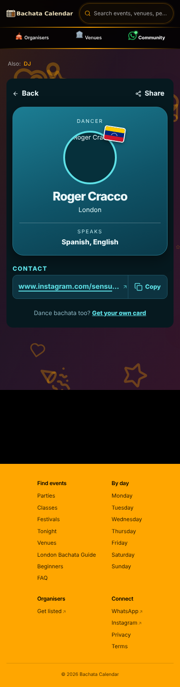
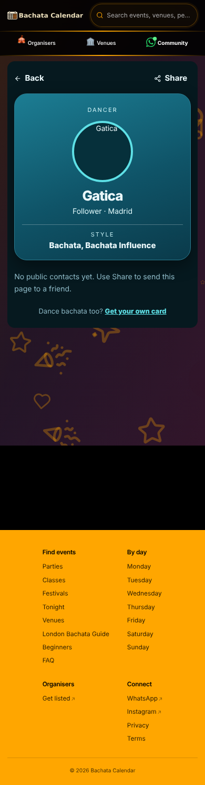
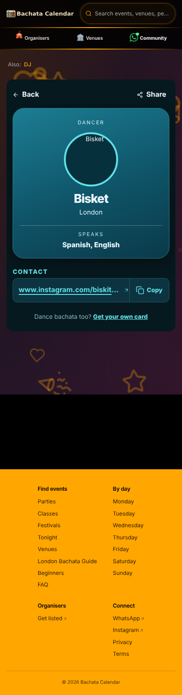
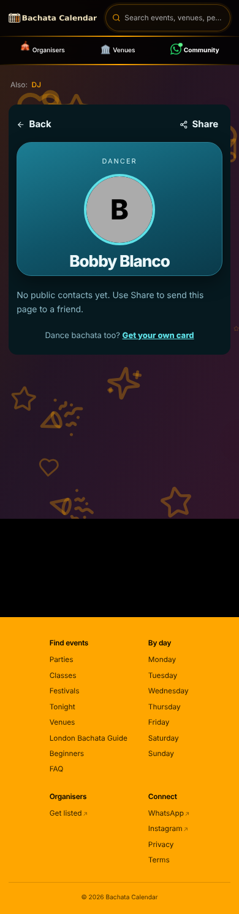


